Buddy was helping with the laundry. Heather had said so, and he intended to remain the sort of dog about whom people said that.
At her friend Priya’s bungalow on the outskirts of Ahmedabad, the rooftop garden smelled of damp soil, ripe mangoes, and morning chai. Heather adored it. Neet chased a sunbeam between the pots while Buddy followed her empty laundry basket toward the doorway. The freshly washed dupattas fluttered above them, pink, turquoise, and yellow.
Heather set the basket down and scratched his head. “Thank you, helper.”
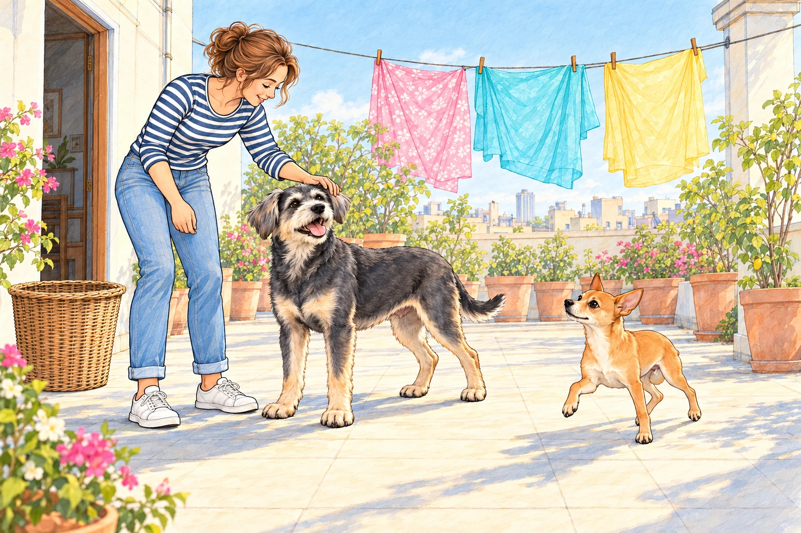
Buddy had carried nothing. He had, however, arrived with the basket. It seemed wise to accept the position before anybody examined its requirements.
He checked the doorway. It led indoors, as promised. A short journey from the clothesline to there would complete a very respectable morning.
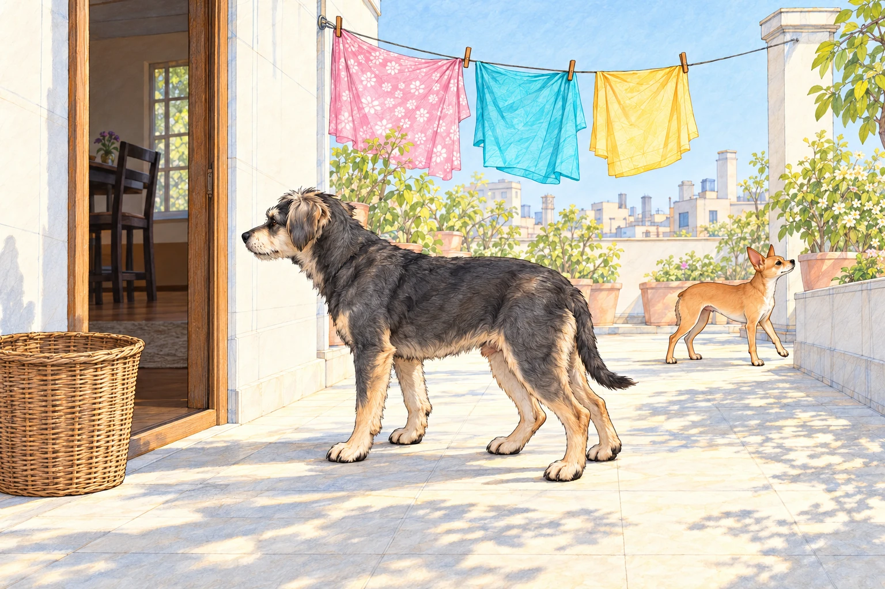
Then something tugged the clothesline.
Heather’s peaceful tea moment was interrupted by an alarming rustle. A small group of monkeys hopped over the boundary wall into the garden. Their leader, a burly alpha with a scar across his face, paused on the wall to inspect the terrace. Heather froze with her cup halfway to her mouth.
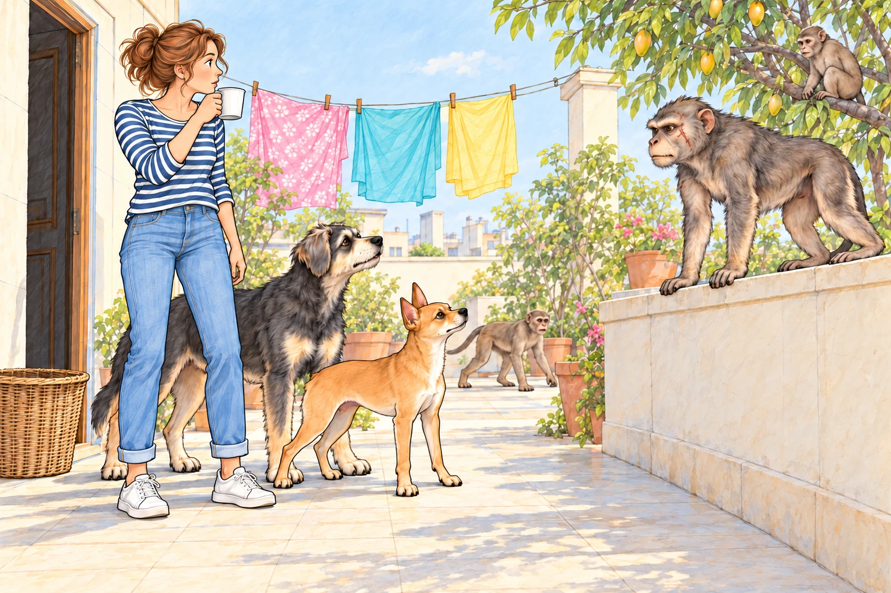
Neet stopped chasing sunlight. At last, something on this roof could be made to leave.
The monkeys plucked ripe mangoes from the small tree in the corner, flung pots over, and spilled soil everywhere. One particularly mischievous monkey yanked the clothesline. Heather’s freshly washed dupattas tumbled into the dirt.
Her shriek brought both dogs bolting to her side.
One monkey sat down with a mango and watched the laundry fall. It had brought breakfast to the entertainment.
Neet’s Dorito-shaped ears twitched. A low growl began in his throat. Buddy took a cautious step backward, then saw the yellow dupatta spread over the soil. That had been clean. Heather had been pleased about that.
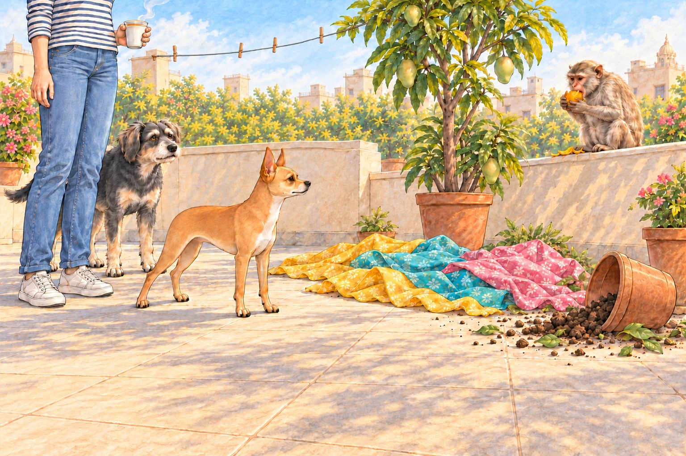
“Oh no, no, no,” Heather whispered, reaching toward Neet. “Let’s not escalate this…”
“Too many guests,” Buddy told him. “No one brought a bowl.”
Neet erupted into high-pitched yaps. The smaller monkeys paused, momentarily startled by the tiny dog’s audacity. The alpha answered with an aggressive snarl, baring his teeth.
Neet planted his fine legs and barked harder. He had given the visitor a chance to apologize. The visitor had shown him teeth instead.
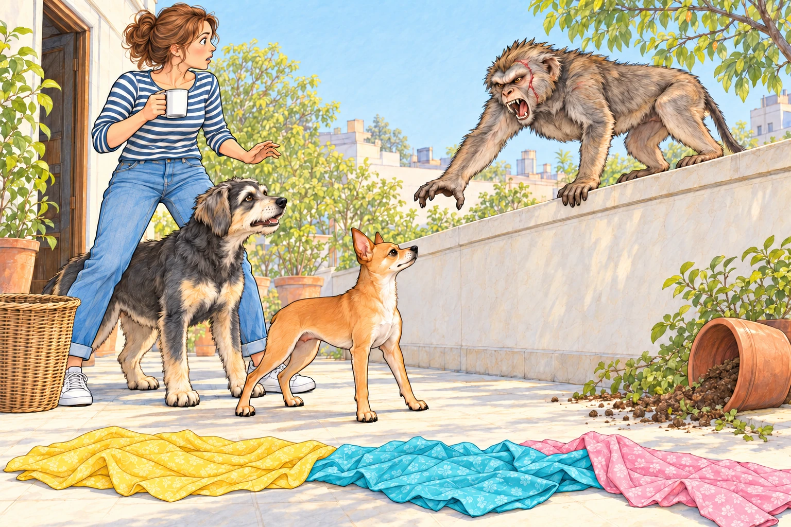
Buddy edged closer to Heather. “Buddy, help me calm Neet down!” she whispered frantically.
Buddy looked at Neet, then at Heather. This was an ambitious assignment. Neet was already darting toward the alpha.
The alpha leaped onto the garden’s central pillar, seized a small watering can from its top, and hurled it toward him. It missed by inches and clattered across the floor. Neet jumped sideways, then pursued the can with furious barking.
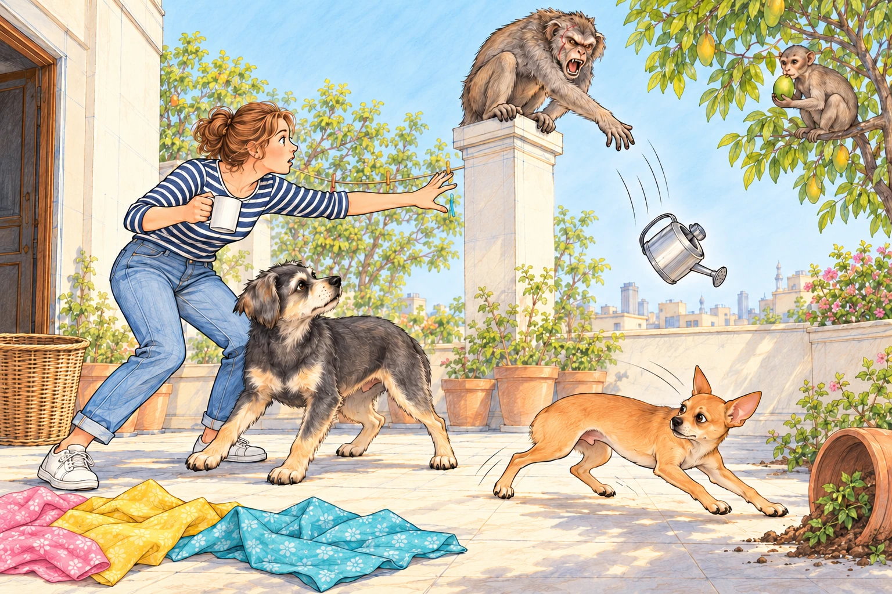
“Leave that!” Heather lunged to catch him, but he slipped around a planter. Smaller monkeys bounced from pot to pot. One knocked over a tray of seedlings; another landed on the loose clothesline and made its remaining pegs jump.
Buddy decided to complete the useful part of the morning. He caught a corner of the yellow dupatta in his teeth and backed toward the basket.
The monkey beside the clothesline caught the other corner.
Buddy stopped. The monkey stopped. The fabric tightened between them.
“Oh,” Buddy said through his teeth.
Neet swung around. A large yellow shape was waving over Buddy’s head. Behind it stood another intruder.
“Hold your position!” he barked.
Buddy would have preferred a position with nobody attached to the far end.
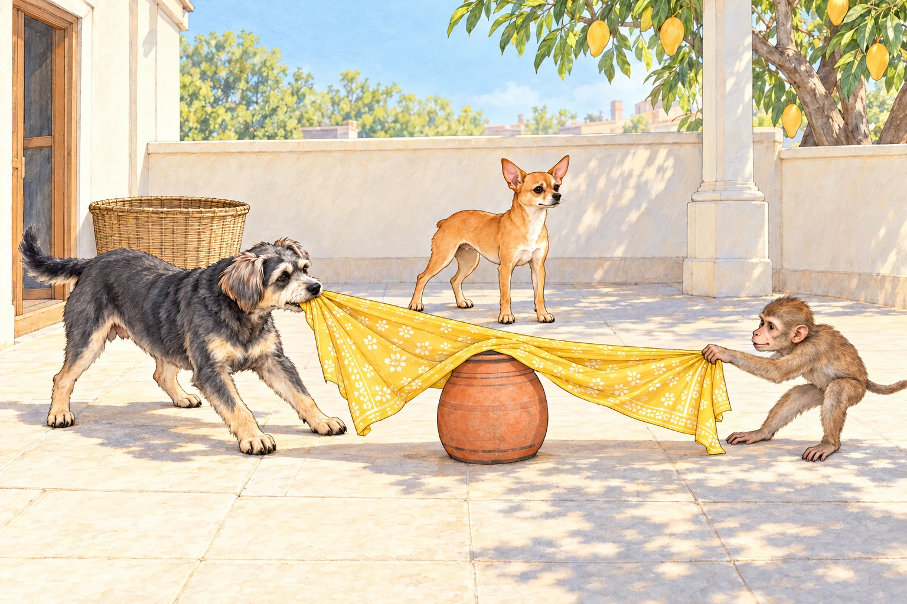
He pulled. The monkey pulled. A fold of cloth caught around a terracotta pot between them. The pot rocked once, twice, and toppled with a crack. The fabric tore, Buddy’s end went slack, and he stumbled backward into the empty basket.
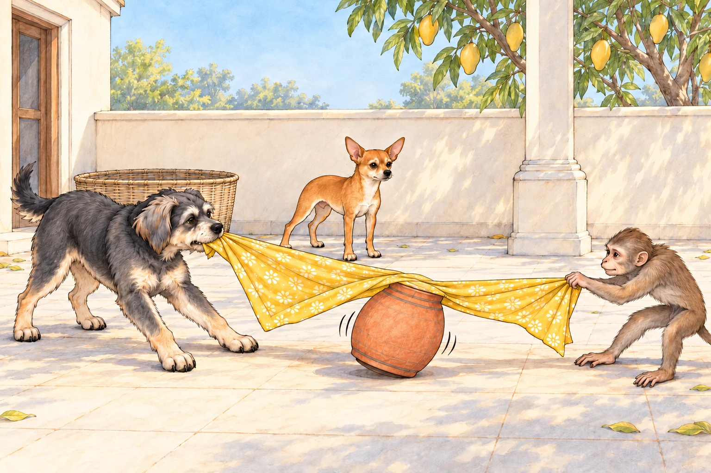
The monkey kept the dupatta. Buddy kept a mouthful of yellow corner.
Heather turned at the crash. “Buddy! Oh, sweetheart—come here.”
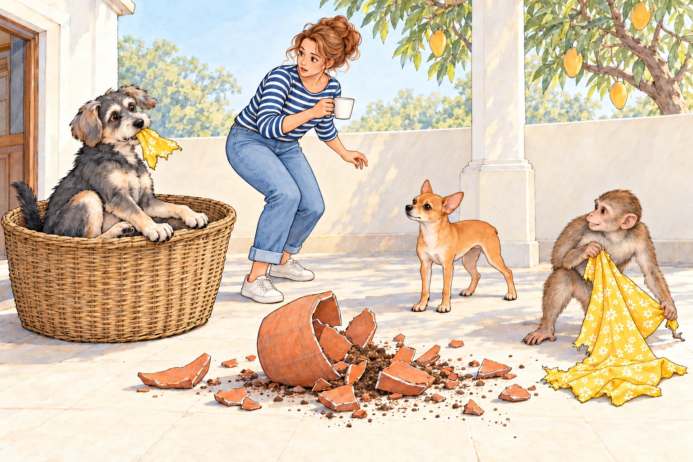
He climbed out of the basket. Neet dashed past him, barking at the victorious monkey, which scrambled up the pillar and let the larger piece of cloth drop. The alpha swiped at Neet from above. Neet ducked behind the fallen pot.
Buddy put down the torn corner. His first actual contribution had made two things out of one thing. Heather did not appear to need two.
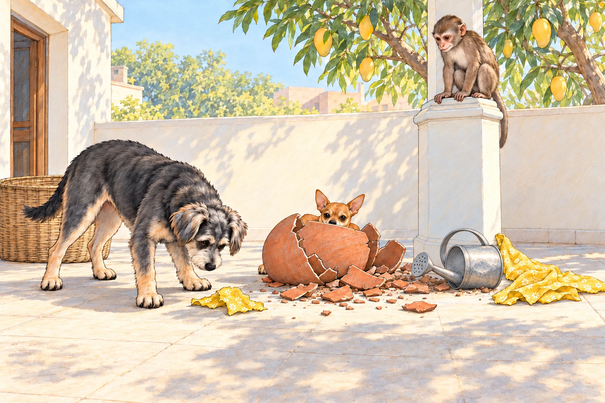
She set her chai safely on a high ledge and reached for Neet again. Buddy noticed the broom leaning against the wall behind her. The fallen turquoise dupatta lay over its bristles.
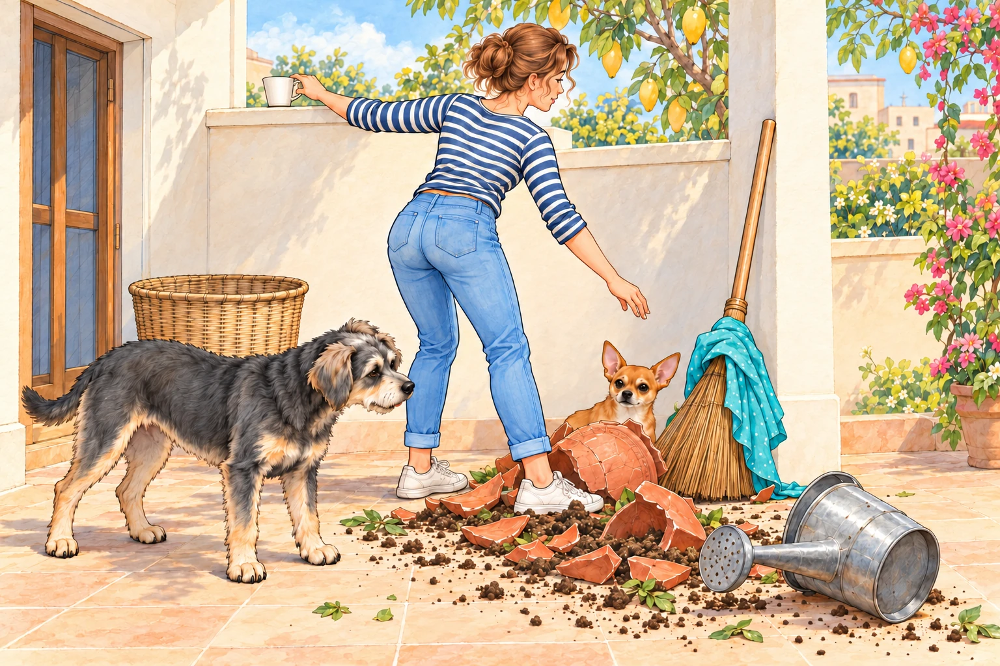
He could still be helpful.
He took the turquoise cloth and dragged it toward the doorway. It slid easily for two steps. Then its folded edge swept up the broom’s bristles, pulling the broom flat with a clack.
Heather spun around. Buddy stood beside the doorway with the cloth in his mouth and the broom lying between them.
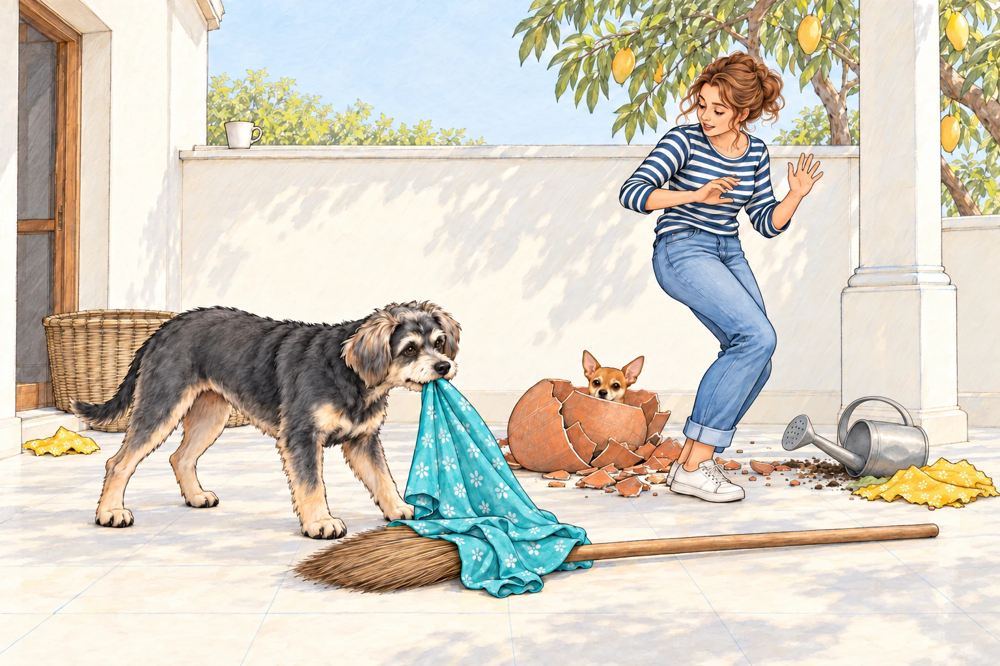
“Please,” she said, almost laughing. “One crisis at a time.”
He dropped it immediately.
A smaller monkey hopped down beside Heather’s chair and reached for the cloth. Buddy stepped forward beside her and barked.
The sound came out deep and startlingly loud. The smaller monkeys paused to eye him warily. The monkey with the mango stopped chewing.
Buddy glanced behind himself. No larger dog had arrived. That had been his bark.
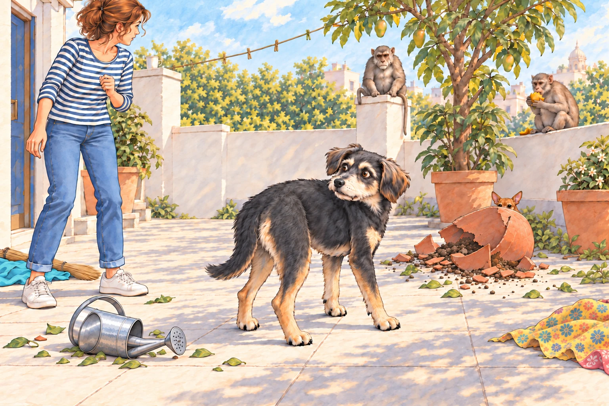
He tried it once more.
The monkey by the chair withdrew its hand. Buddy’s chest lifted. This was considerably better than laundry.
Neet popped out from behind the pot. “Yes! Do that!”
Buddy barked again. The mango eater tucked its fruit against its chest. Buddy found this deeply satisfying. Somebody was finally being careful with something.
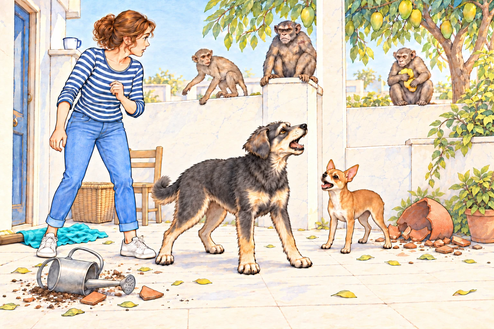
While the visitors watched him, Heather stepped over the fallen broom, freed its bristles from the cloth, and picked it up. She kept the wide end between herself and the monkeys.
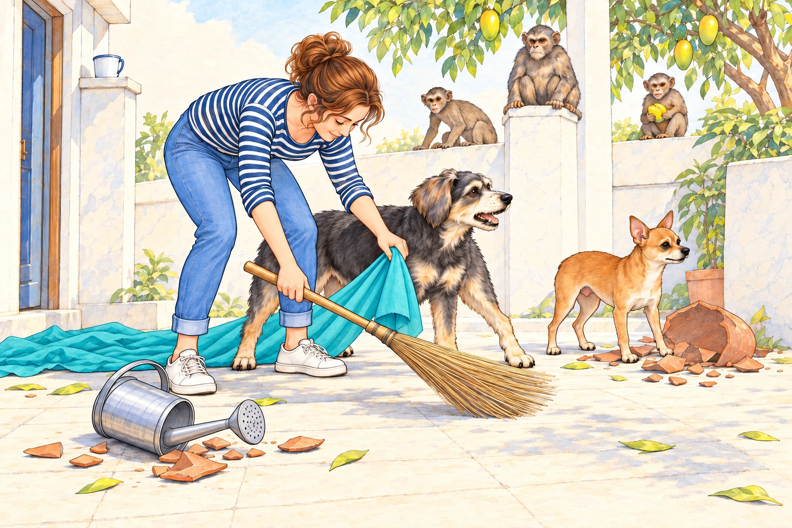
“Shoo! Out!”
Neet darted toward the pillar again. The alpha hissed and swiped, missing him as he skittered sideways behind the fallen pot. Heather swept the broom through the open space in front of her. Buddy barked beside her knee.
For a moment, the three of them had a plan. Neet provided enthusiasm. Buddy provided volume. Heather provided the only object on the terrace longer than an arm that was still doing its intended job.
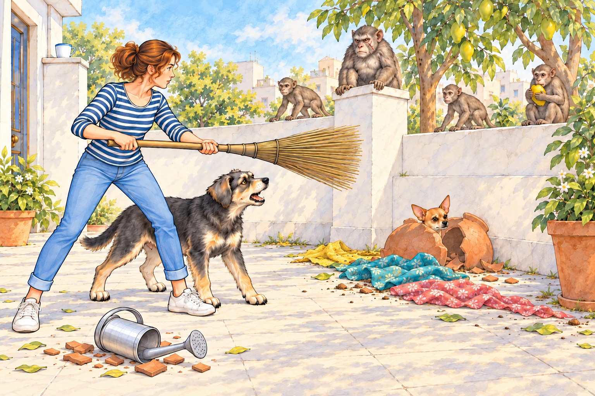
Two smaller monkeys scrambled onto the wall. The laundry thief followed them, empty-handed. The mango eater took one last bite before leaving. Buddy gave it an additional bark to hurry the chewing.
Then he had to breathe.
The alpha remained on the pillar. Buddy’s throat felt rough; his wonderful new solution required quite a lot of air. A smaller monkey lingering on the wall leaned forward again.
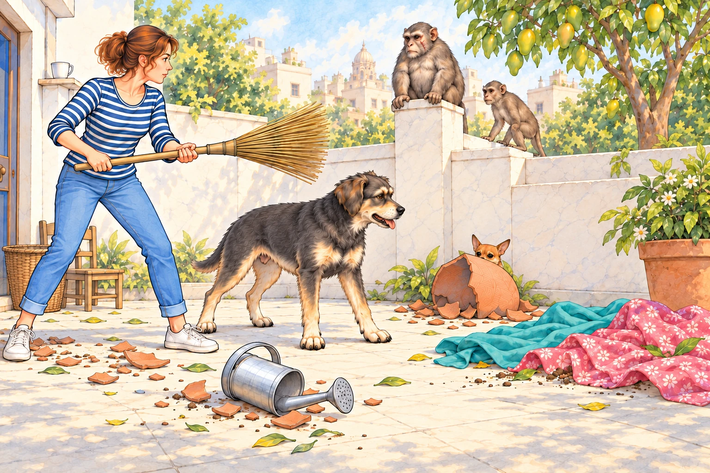
Heather took a firm step toward it with the broom raised. It recoiled and dropped out of sight. Buddy barked once, in agreement. He could be useful without doing every part himself.
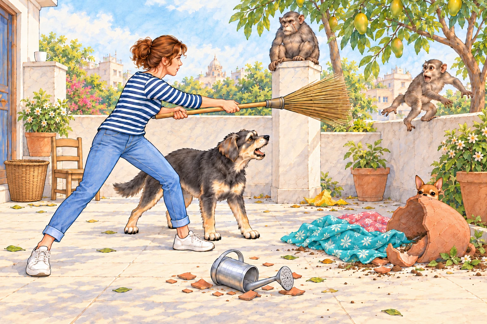
Only the alpha was left.
The larger piece of yellow dupatta lay near the pillar, no longer held by anybody. Buddy spotted the torn edge. If he took it now, perhaps Heather could still have most of her laundry.
He moved toward it.
The alpha crouched. Neet saw the movement and rushed out from behind the pot, placing himself between the pillar and Heather. His ears stood high, his narrow chest thrust forward. Nobody had asked him to be a barrier. He looked very certain that he was one.
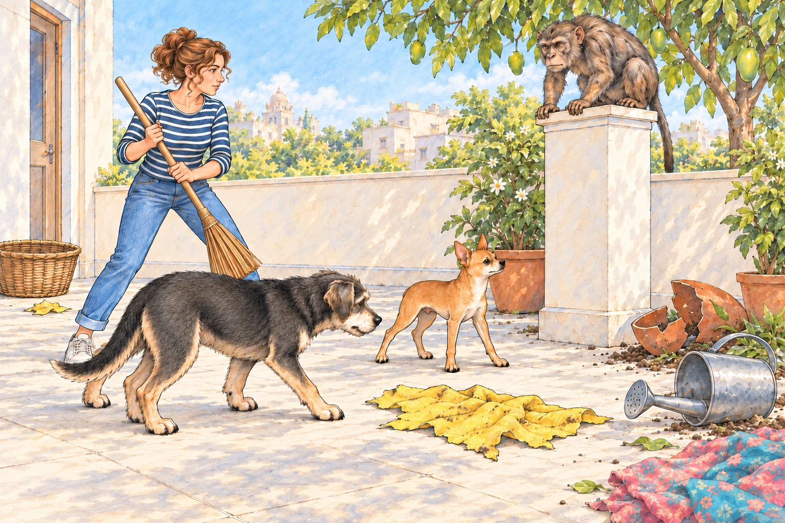
With a sharp screech, the alpha lunged down, landing just feet from him.
Heather cried out. She swung the broom into the space ahead of Neet, but the monkey moved too quickly for her to block its approach.
Buddy was two steps from the cloth. One more, and he could reach it.
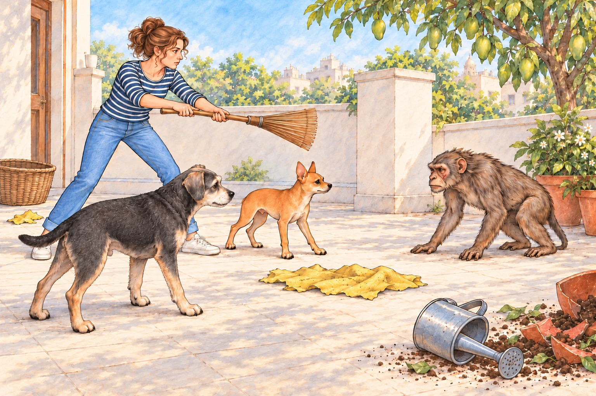
Neet’s fiery bark rose. His paws stayed planted.
Buddy left the dupatta where it was.
He sprang between Neet and the alpha with an unexpected burst of speed, barking ferociously. The monkey hesitated at the sudden movement and noise. Heather stepped forward at once, broom outstretched, her voice ringing across the terrace.
“Out! Go on!”
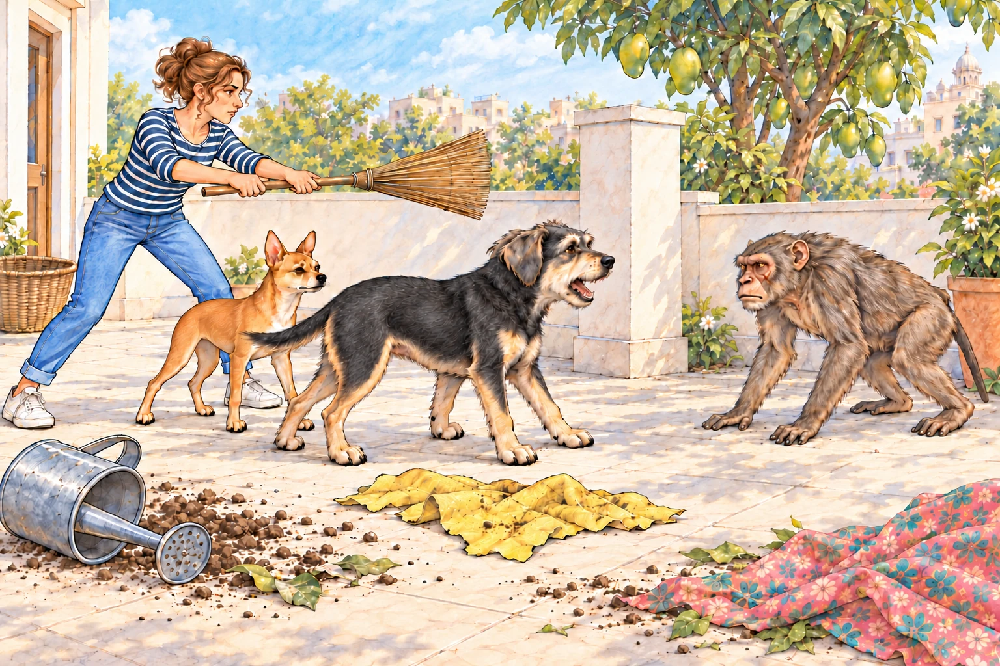
The alpha retreated onto the boundary wall. It cast one last defiant glare at the trio, screeched toward the trees, and followed its troop away.
Neet started after it.
Buddy turned across his path. Heather lowered the broom between Neet and the wall.
“Enough,” she said, breathless. “We’re all here.”
Neet glanced at her, then at Buddy. The intruder was leaving without an escort. It was an imperfect arrangement, but he stayed.
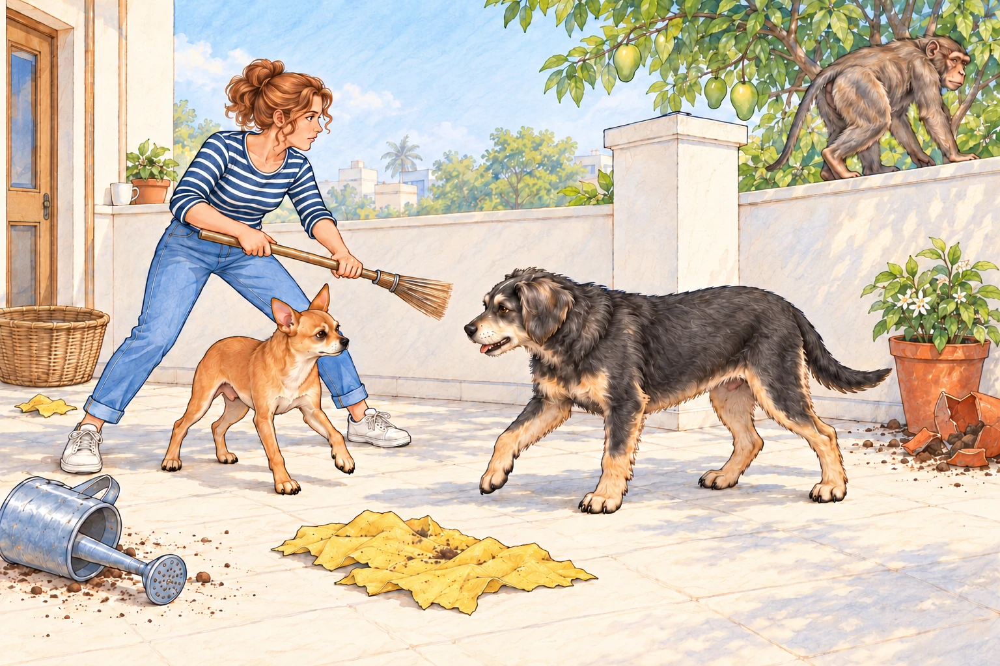
The roof fell silent except for a drip from the overturned watering can.
Heather sank onto her chair, still clutching the broom. Upturned pots, shredded leaves, scattered soil, and broken terracotta covered her beloved garden. Neet strutted beside her, his tiny nub lifted. Buddy pressed his head against her leg.
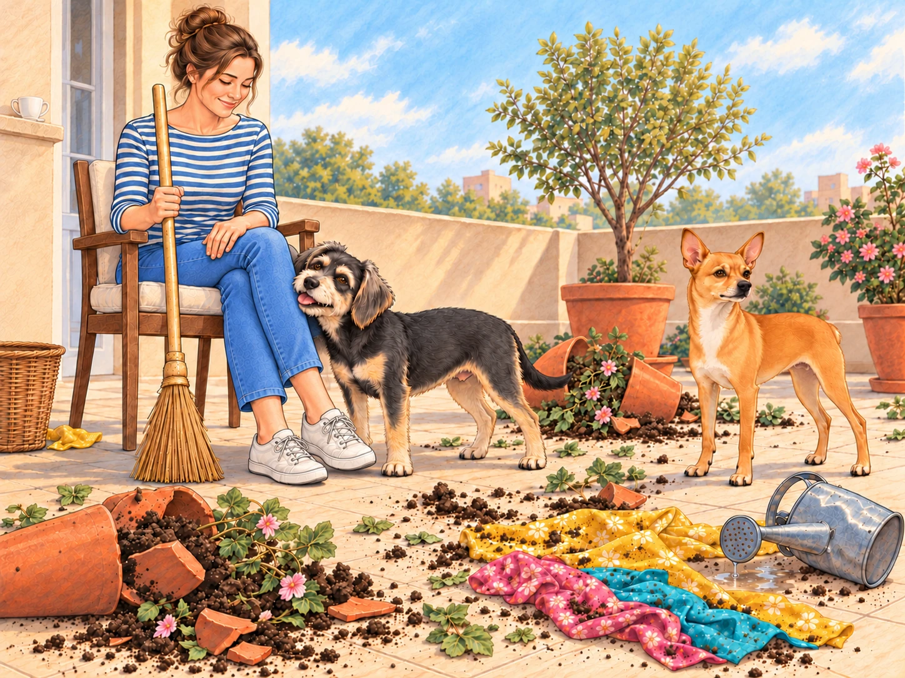
“You two are something else.” Heather pulled them close, laughing shakily into their fur. “My brave little protectors.”
“We held the garden,” Neet told Buddy.
Buddy looked at a pot lying in three pieces. “Which bits?”
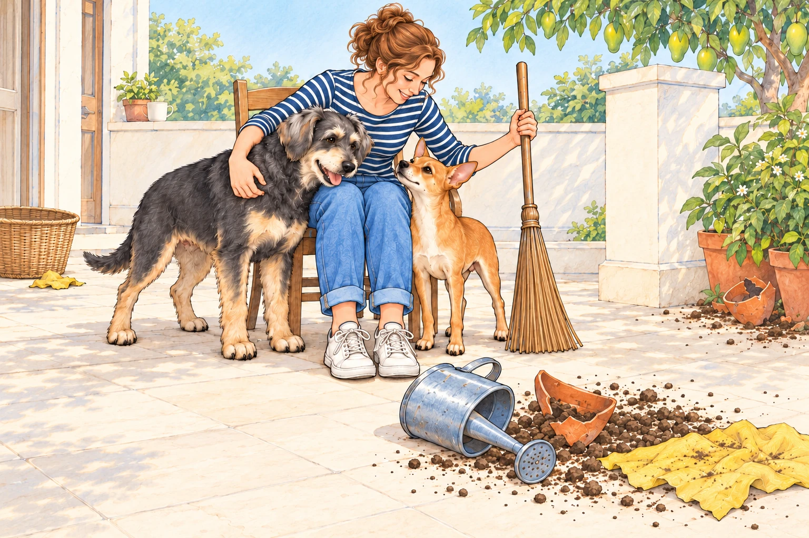
Heather put the broom down and reached for a broken rim. Neet stepped forward to inspect it.
“No,” she said. “You’ve done plenty.”
He accepted this as praise.
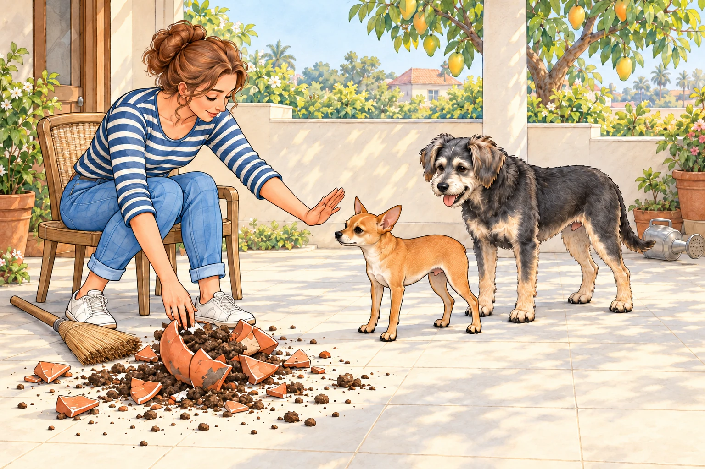
She checked both dogs over, brushed soil from Buddy’s beard, and rubbed the narrow space between Neet’s ears. Neither had a scratch. Buddy leaned harder into her hand. He had been brave while very much wishing that bravery were unnecessary.
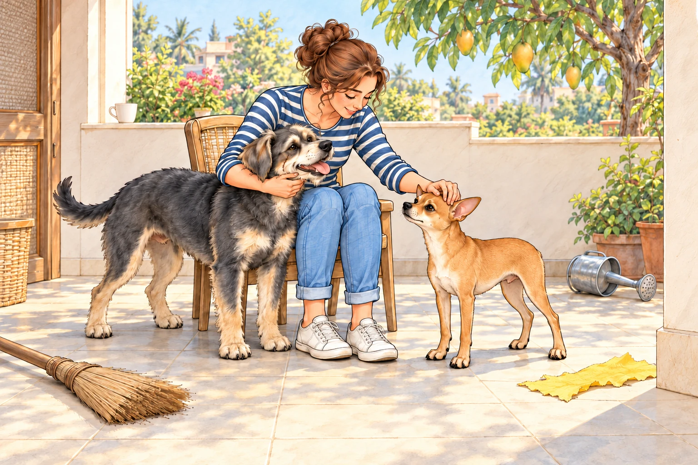
Then he looked toward the yellow dupatta.
Heather followed his gaze. She rose, kept the dogs clear of the broken pots, and gathered the fallen fabric herself. Buddy stood beside the empty basket as she laid the dirty dupattas inside. The yellow one went in last, together with its small detached corner.
“Well,” Heather said, examining the tear. “You did try.”
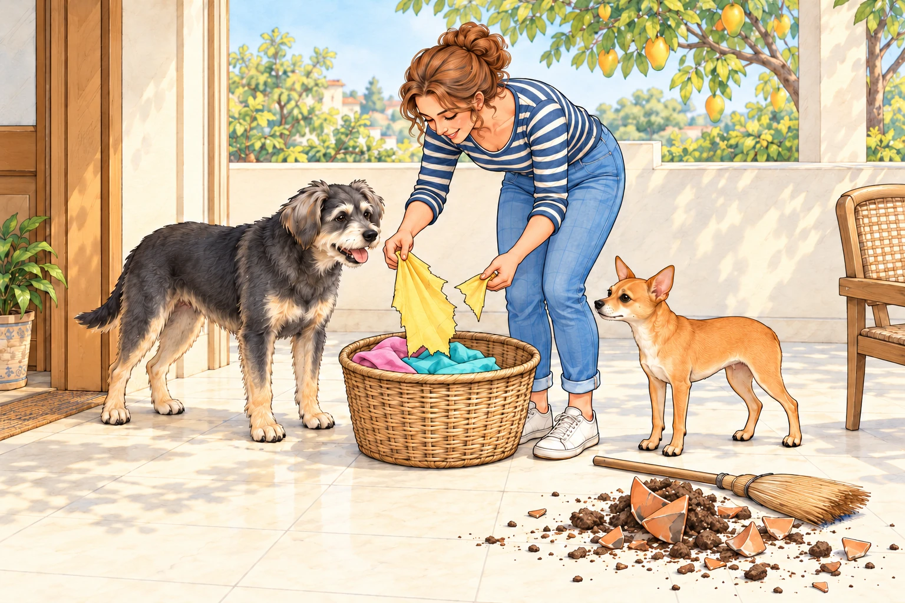
Buddy sniffed the basket. It held the laundry. He stood beside it. This was the arrangement that had worked before he improved it.
Heather touched his head. “Come on, helper.”
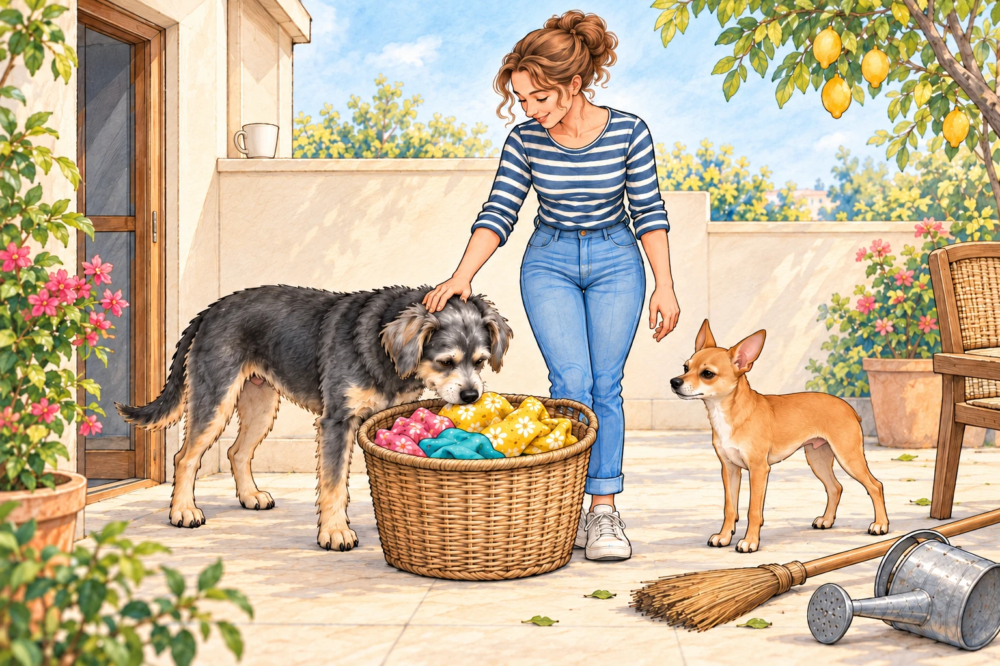
She picked up the broom, then carried the basket toward the doorway. Buddy went ahead, then waited just inside while she called Neet. He stayed until both of them were through. The cloth could be washed again. The garden would need rather more than washing, but nobody had been left on the roof to guard the pieces.
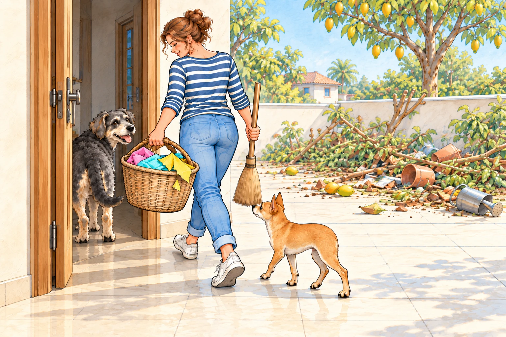
Heather glanced back at the wreckage. “Sturdier pots,” she murmured. Then she looked down at the broom still in her other hand. “And chai indoors tomorrow.”
Neet glanced approvingly at the broom. “Position secured,” he told Buddy as he passed.
Buddy let Heather through before following. At last, they agreed on the position.
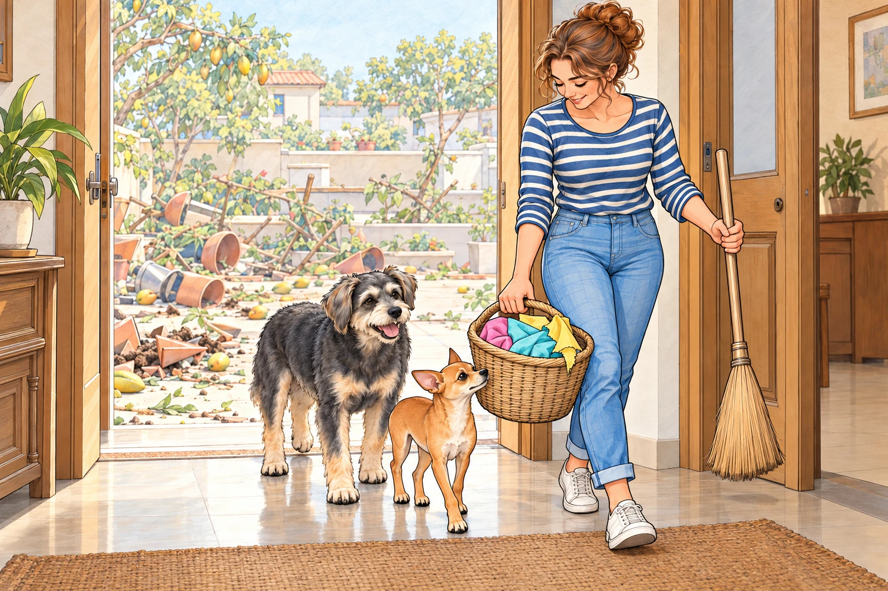